In this exercise, we will load a dataset of YouGov sentiment ratings of Trump tweets and explore how different people rate those tweets.
First, we load the necessary libraries. jsonlite lets us read JSON data directly from a URL, and tidyverse provides a suite of data manipulation and visualization tools.
[1] "text" "group" "data" "created_at"
[5] "survey_date" "objectID" "_highlightResult"[1] "Great honor to be headed to the Army-Navy game today. Will be there shortly, landing now! https://t.co/ByAfESq8aS"
[2] "....left and right, he then woke up from his dream screaming that HE LIED. Next time I go to Vietnam I will ask 'the Dick' to travel with me!"
[3] "Watched Da Nang Dick Blumenthal on television spewing facts almost as accurate as his bravery in Vietnam (which he never saw). As the bullets whizzed by Da Nang Dicks head, as he was saving soldiers...."
[4] "Very sad day & night in Paris. Maybe it's time to end the ridiculous and extremely expensive Paris Agreement and return money back to the people in the form of lower taxes? The U.S. was way ahead of the curve on that and the only major country where emissions went down last year!"
[5] "'This is collusion illusion, there is no smoking gun here. At this late date, after all that we have gone through, after millions have been spent, we have no Russian Collusion. There is nothing impeachable here.' @GeraldoRivera Time for the Witch Hunt to END!" # A tibble: 6 x 4
All$score $base $data Democrat$score Republican$score Independent$score
<dbl> <int> <list> <dbl> <dbl> <dbl>
1 20.6 1000 <dbl [5]> -38.2 104. 37.3
2 -58.3 1000 <dbl [5]> -140. 45.1 -48.0
3 -58.3 1000 <dbl [5]> -140. 45.1 -48.0
4 -26.7 1000 <dbl [5]> -123. 92.1 -3.53
5 -34.8 1000 <dbl [5]> -133. 99.1 -22.8
6 13.5 1000 <dbl [5]> -54.3 110. 29.5
# i 6 more variables: Democrat$base <int>, $data <list>, Republican$base <int>,
# $data <list>, Independent$base <int>, $data <list>We now construct a tidy tibble that includes:
text: the tweet contentscore: overall sentiment scorescore_dems: average rating by Democratsscore_reps: average rating by Republicans# A tibble: 4,404 x 4
text score score_dems score_reps
<chr> <dbl> <dbl> <dbl>
1 Great honor to be headed to the Army-Navy game t~ 20.6 -38.2 104.
2 ....left and right, he then woke up from his dre~ -58.3 -140. 45.1
3 Watched Da Nang Dick Blumenthal on television sp~ -58.3 -140. 45.1
4 Very sad day & night in Paris. Maybe it's time t~ -26.7 -123. 92.1
5 'This is collusion illusion, there is no smoking~ -34.8 -133. 99.1
6 ....I am thankful to both of these incredible me~ 13.5 -54.3 110.
7 I am pleased to announce my nomination of four-s~ 13.5 -54.3 110.
8 AFTER TWO YEARS AND MILLIONS OF PAGES OF DOCUMEN~ -39.6 -136. 78.2
9 The idea of a European Military didn't work out ~ -18.2 -109. 87.2
10 The Paris Agreement isn't working out so well fo~ -42.2 -131. 69.6
# i 4,394 more rowsCheck for missing values:
[1] FALSE[1] FALSECalculate the average rating among Democrats and Republicans:
# A tibble: 6 x 4
text score score_dems score_reps
<chr> <dbl> <dbl> <dbl>
1 I know Mark Cuban well. He backed me big-time but~ -81.4 -134. -18.0
2 I heard poorly rated @Morning_Joe speaks badly of~ -77.5 -143. 6.39
3 ...to Mar-a-Lago 3 nights in a row around New Yea~ -77.5 -143. 6.39
4 Crazy Joe Scarborough and dumb as a rock Mika are~ -76.7 -150. 27.7
5 Lebron James was just interviewed by the dumbest ~ -72.3 -168. 45.8
6 Just watched Wacky Tom Steyer, who I have not see~ -71.7 -148. 45.9 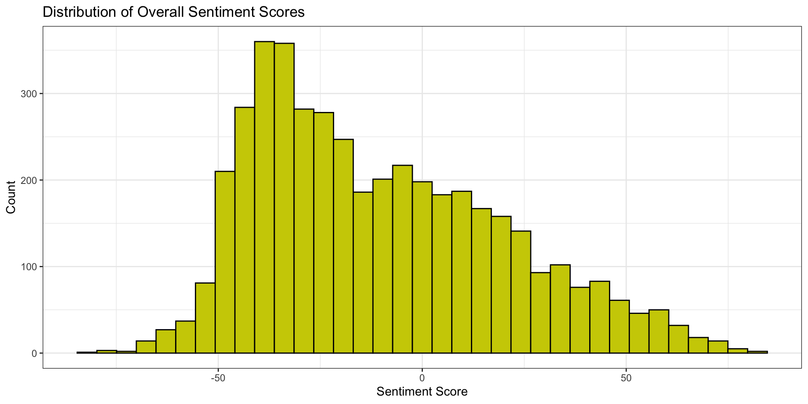
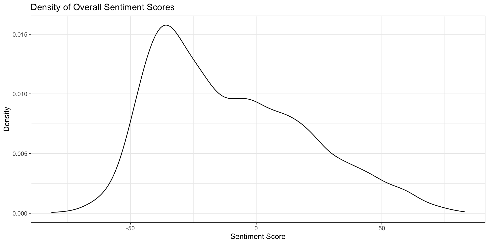
Compute and compare mean ratings by party
What should the structure of the input be?
Compute and compare mean ratings by party
What should the structure of the input be?
Better to stack the data (go from wide to long)
data %>%
summarize(
Democrats = mean(score_dems, na.rm = TRUE),
Republicans = mean(score_reps, na.rm = TRUE)
) %>%
pivot_longer(cols = everything(), names_to = "party", values_to = "mean_score") %>%
ggplot(aes(x = party, y = mean_score)) +
geom_col(aes(fill = party), width = 0.3) +
geom_hline(yintercept = 0, color = "black") +
scale_fill_manual(values = c("Democrats" = "blue3", "Republicans" = "red3")) +
theme_bw(base_size = 12) +
labs(
x = "Party",
y = "Mean Sentiment Score",
title = "Mean Sentiment Score by Party (All Tweets)",
fill = "Party"
)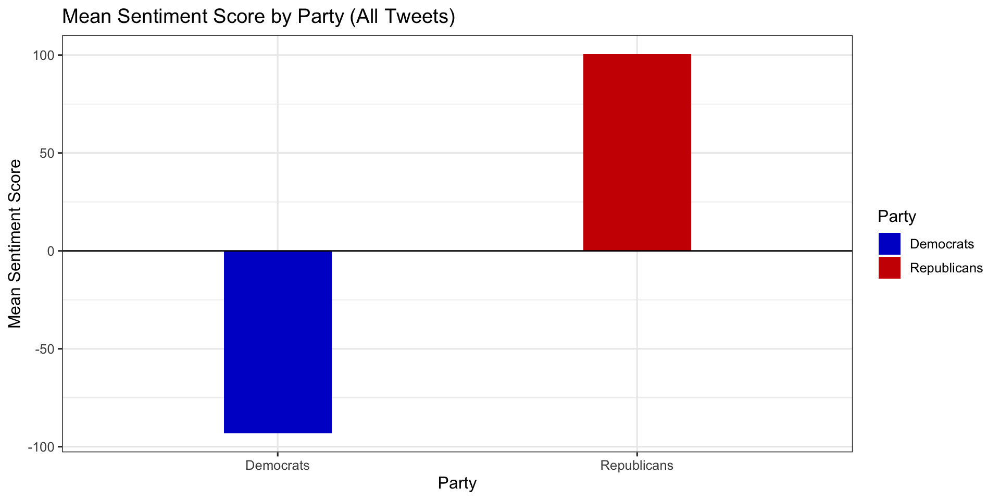
Plot Democrat ratings (score_dems) against Republican ratings (score_reps) to see whether respondents tend to agree (in spite of an anticipate “intercept shift”)
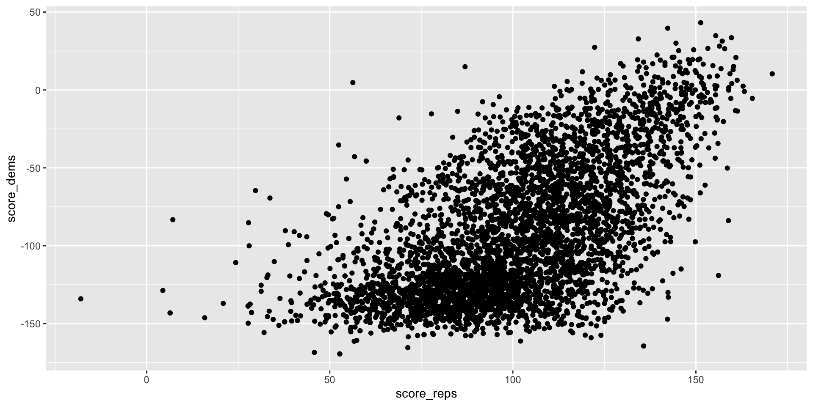
Another way to show the correlation
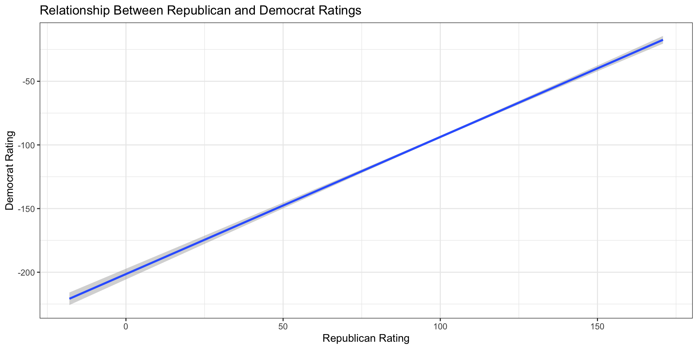
Reshape the full data for plotting density curves of each rating type:
# A tibble: 13,212 x 3
text party score
<chr> <chr> <dbl>
1 Great honor to be headed to the Army-Navy game today. Will be t~ score 20.6
2 Great honor to be headed to the Army-Navy game today. Will be t~ scor~ -38.2
3 Great honor to be headed to the Army-Navy game today. Will be t~ scor~ 104.
4 ....left and right, he then woke up from his dream screaming th~ score -58.3
5 ....left and right, he then woke up from his dream screaming th~ scor~ -140.
6 ....left and right, he then woke up from his dream screaming th~ scor~ 45.1
7 Watched Da Nang Dick Blumenthal on television spewing facts alm~ score -58.3
8 Watched Da Nang Dick Blumenthal on television spewing facts alm~ scor~ -140.
9 Watched Da Nang Dick Blumenthal on television spewing facts alm~ scor~ 45.1
10 Very sad day & night in Paris. Maybe it's time to end the ridic~ score -26.7
# i 13,202 more rows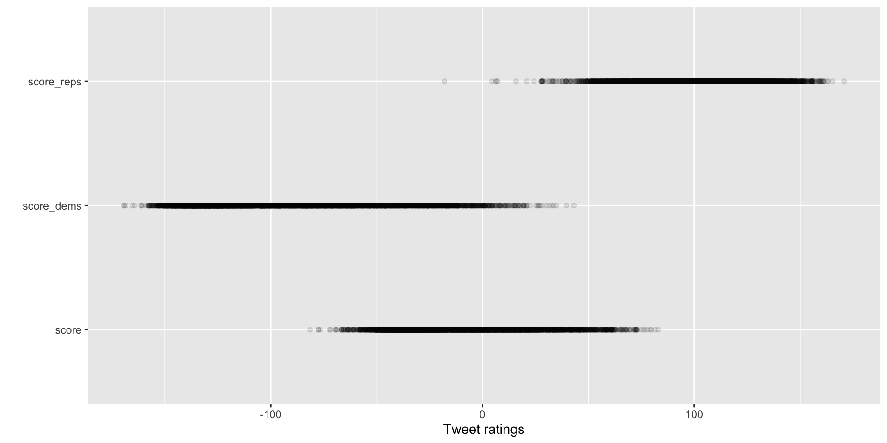
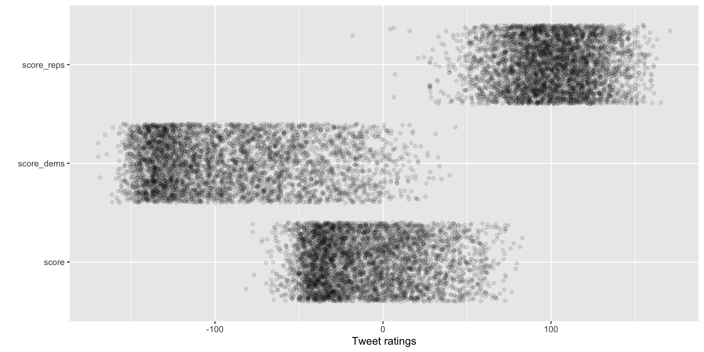
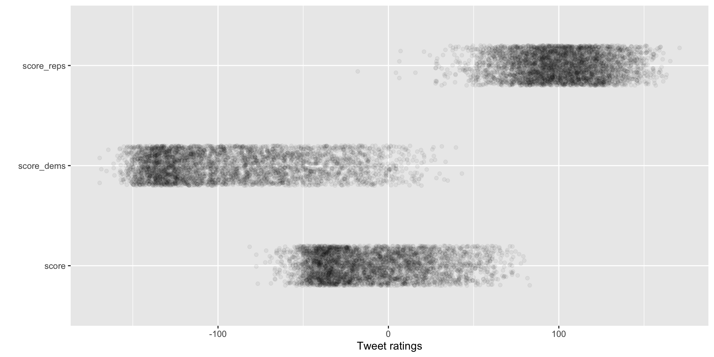
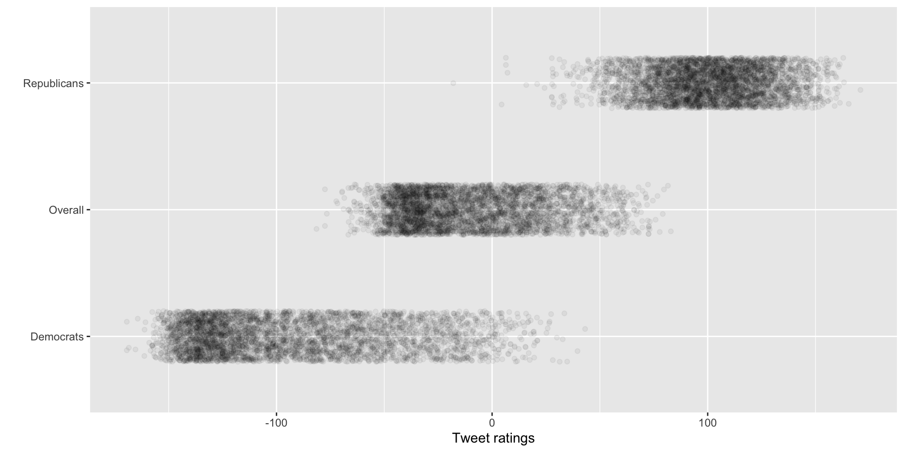
long_data %>%
mutate(Party = case_when(
party == "score_dems" ~ "Among Democrats",
party == "score_reps" ~ "Among Republicans",
TRUE ~ "Overall") ) %>%
ggplot(aes(y = Party, x = score, color = Party)) +
geom_jitter(alpha = .065,height = .2, show.legend = F) + labs(x="Tweet ratings",y="") +
scale_color_manual(values = c("Among Democrats" = "steelblue", "Among Republicans" = "red4", "score"= "Overall")) + theme_minimal() 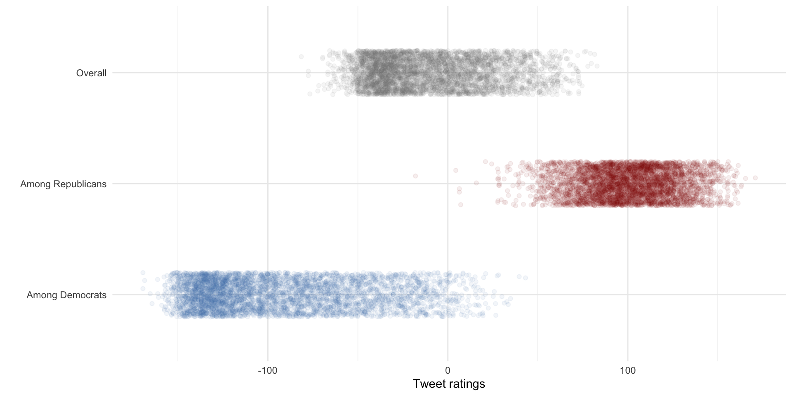
long_data %>%
mutate(Party = case_when(
party == "score_dems" ~ "Among Democrats",
party == "score_reps" ~ "Among Republicans",
TRUE ~ "Overall") ) %>%
ggplot(aes(y = Party, x = score, fill = Party)) +
geom_boxplot() +
scale_fill_manual(values = c("Among Democrats" = "steelblue", "Among Republicans" = "red4", "score"= "Overall")) + theme_minimal() 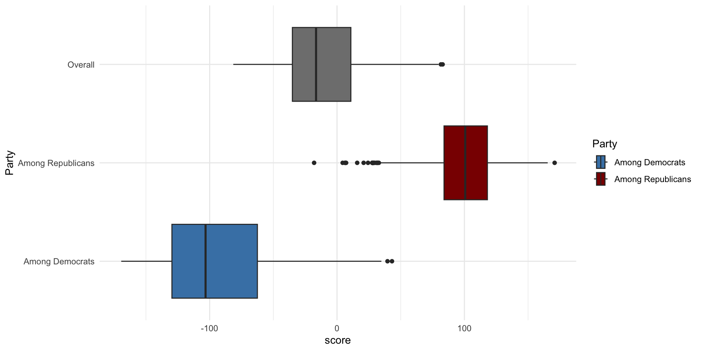
long_data %>%
mutate(Party = case_when(
party == "score_dems" ~ "Among Democrats",
party == "score_reps" ~ "Among Republicans",
TRUE ~ "Overall") ) %>%
ggplot(aes(y = Party, x = score, fill = Party)) +
geom_boxplot(show.legend = FALSE) +
scale_fill_manual(values = c("Among Democrats" = "steelblue", "Among Republicans" = "red4", "score"= "Overall")) + theme_minimal() 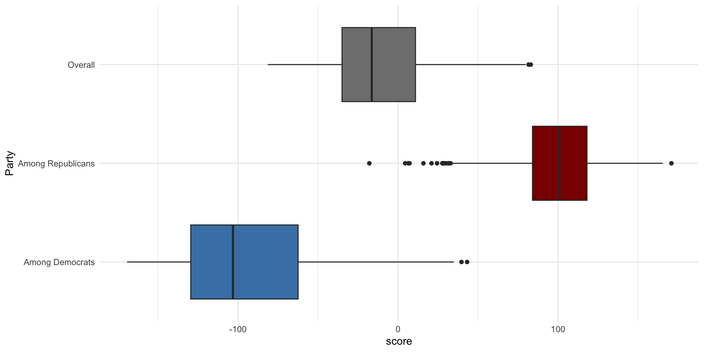
You can also add a jitter layer to the boxplot to show individual data points:
long_data %>%
mutate(Party = case_when(
party == "score_dems" ~ "Among Democrats",
party == "score_reps" ~ "Among Republicans",
TRUE ~ "Overall") ) %>%
ggplot(aes(y = Party, x = score, fill = Party)) +
geom_jitter(alpha = .065,height = .2, show.legend = F) + labs(x="Tweet ratings",y="") +
geom_boxplot(show.legend = FALSE) +
scale_fill_manual(values = c("Among Democrats" = "steelblue", "Among Republicans" = "red4", "score"= "Overall")) + theme_minimal() 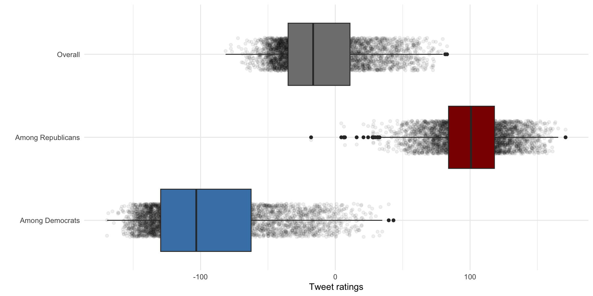
Adjust the boxplot transparency:
long_data %>%
mutate(Party = case_when(
party == "score_dems" ~ "Among Democrats",
party == "score_reps" ~ "Among Republicans",
TRUE ~ "Overall") ) %>%
ggplot(aes(y = Party, x = score, fill = Party)) +
geom_jitter(alpha = .065,height = .2, show.legend = F) + labs(x="Tweet ratings",y="") +
geom_boxplot(show.legend = FALSE,alpha=.6) +
scale_fill_manual(values = c("Among Democrats" = "steelblue", "Among Republicans" = "red4", "score"= "Overall")) + theme_minimal() 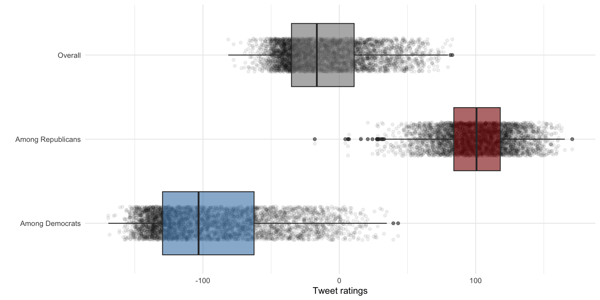
Make the points more subtle
long_data %>%
mutate(Party = case_when(
party == "score_dems" ~ "Among Democrats",
party == "score_reps" ~ "Among Republicans",
TRUE ~ "Overall") ) %>%
ggplot(aes(y = Party, x = score, fill = Party)) +
geom_jitter(alpha = .045,height = .1, size=.25,show.legend = F) + labs(x="Tweet ratings",y="") +
geom_boxplot(show.legend = FALSE,alpha=.6) +
scale_fill_manual(values = c("Among Democrats" = "steelblue", "Among Republicans" = "red4", "score"= "Overall")) + theme_minimal() Make the boxes narrower and the border thinner:
long_data %>%
mutate(Party = case_when(
party == "score_dems" ~ "Among Democrats",
party == "score_reps" ~ "Among Republicans",
TRUE ~ "Overall") ) %>%
ggplot(aes(y = Party, x = score, fill = Party)) +
geom_jitter(alpha = .045,height = .1, size=.25,show.legend = F) + labs(x="Tweet ratings",y="") +
geom_boxplot(alpha=.75,size=.2,width=.3,show.legend = FALSE,) +
scale_fill_manual(values = c("Among Democrats" = "steelblue", "Among Republicans" = "red4", "score"= "Overall")) + theme_minimal() 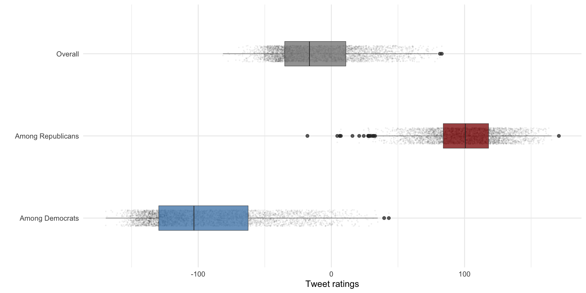
Adjust the dot colors as well:
long_data %>%
mutate(Party = case_when(
party == "score_dems" ~ "Among Democrats",
party == "score_reps" ~ "Among Republicans",
TRUE ~ "Overall") ) %>%
ggplot(aes(y = Party, x = score, fill = Party, color = Party)) +
geom_jitter(alpha = .045,height = .1, size=.25,show.legend = F) + labs(x="Tweet ratings",y="") +
geom_boxplot(alpha=.75,size=.2,width=.3,show.legend = FALSE,) +
scale_color_manual(values = c("Among Democrats" = "steelblue", "Among Republicans" = "red4", "score"= "Overall")) + scale_fill_manual(values = c("Among Democrats" = "steelblue", "Among Republicans" = "red4", "score"= "Overall")) + theme_minimal() 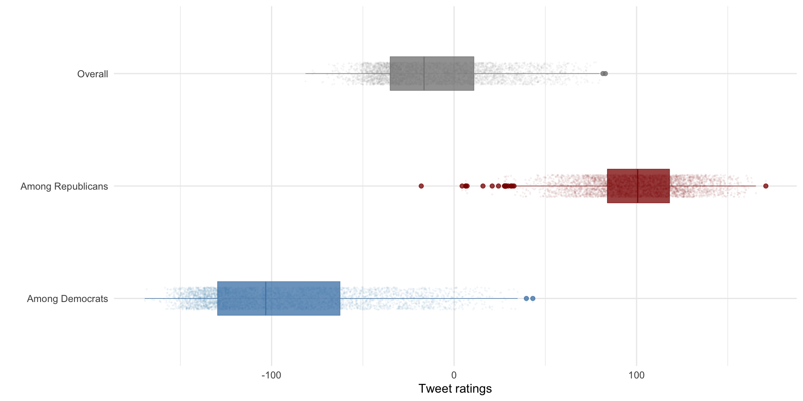
Make final adjustments:
long_data %>%
mutate(Party = case_when(
party == "score_dems" ~ "Among Democrats",party == "score_reps" ~ "Among Republicans",TRUE ~ "Overall"), Party = factor(Party,levels = c("Among Republicans","Overall","Among Democrats"))) %>%
ggplot(aes(y = Party, x = score, fill = Party, color = Party)) +
geom_jitter(alpha = .045,height = .1, size=.25,show.legend = F) + labs(x="Tweet ratings",y="") +
geom_boxplot(outliers=F,alpha=.75,size=.2,width=.3,show.legend = FALSE,) +
scale_color_manual(values = c("Among Democrats" = "steelblue", "Among Republicans" = "red4", "score"= "Overall")) + scale_fill_manual(values = c("Among Democrats" = "steelblue", "Among Republicans" = "red4", "score"= "Overall")) + theme_minimal() + ggtitle("Ratings of Trump tweets among YouGov respondents")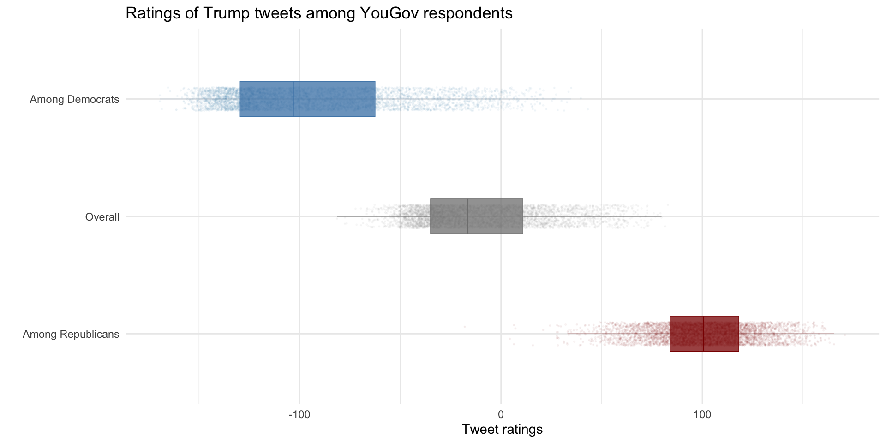
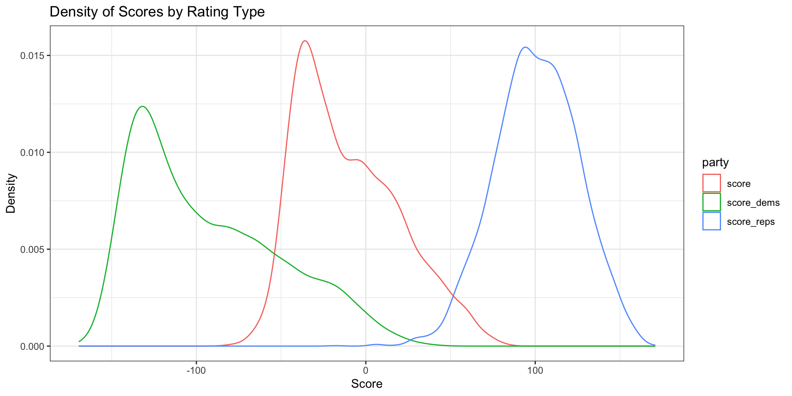
long_data %>%
ggplot(aes(x = score, fill = party)) +
geom_density(alpha = 0.6, show.legend = TRUE) +
scale_fill_manual(
values = c("score_dems" = "steelblue", "score_reps" = "red4", "score" = "grey")
) +
theme_bw(base_size = 12) +
labs(title = "Overlayed Density of Scores", x = "Score", y = "Density", fill = "Rating Type")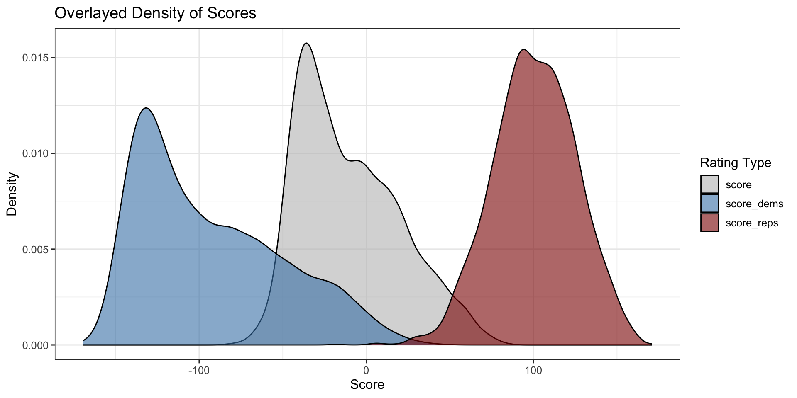
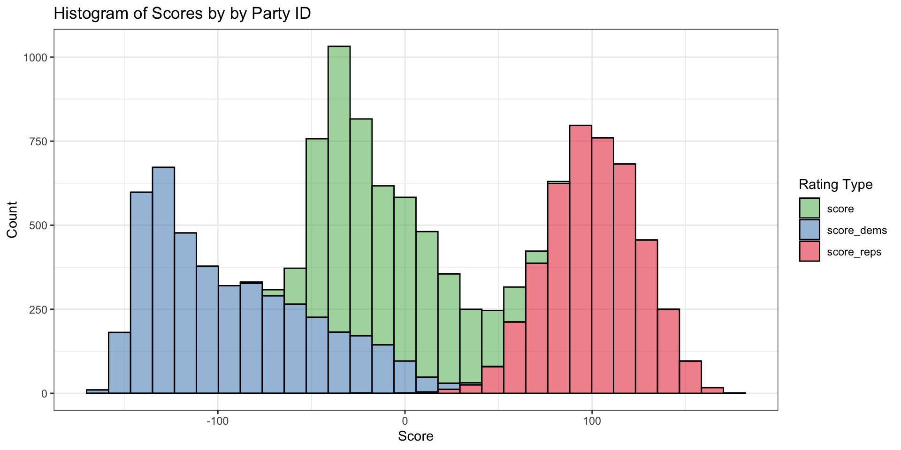
We create a binary indicator obama which is 1 if the tweet text contains the word “Obama”, otherwise 0. Then we can compute how often tweets mention Obama.
Compute mean sentiment ratings by Democrats and Republicans for tweets that mention Obama:
Next, compare average ratings between tweets that do and do not mention Obama:
Make a nicer table with descriptive labels and rounded values:
tab <- data %>%
group_by(obama) %>%
summarize(
mean_dems = mean(score_dems, na.rm = TRUE),
mean_reps = mean(score_reps, na.rm = TRUE)
) %>%
mutate(obama = ifelse(obama == 1, "Obama Mentioned", "Obama Not Mentioned")) %>%
rename(
"Tweet type" = obama,
"Avg. rating among Democrats" = mean_dems,
"Avg. rating among Republicans" = mean_reps
)
# Display the table
(tab %>% knitr::kable(digits = 1))| Tweet type | Avg. rating among Democrats | Avg. rating among Republicans |
|---|---|---|
| Obama Not Mentioned | -91.6 | 100.9 |
| Obama Mentioned | -127.4 | 90.8 |
Identify tweets that mention Obama in the scatter of party ratings:
data %>%
ggplot(aes(x = score_reps, y = score_dems)) +
geom_point(aes(color = factor(obama)), size = 0.4) +
scale_color_manual(values = c("0" = "grey60", "1" = "orange")) +
theme_bw(base_size = 12) + labs(title = "Party Ratings with Obama-Mention Tweets Highlighted",x = "Republican Rating",y = "Democrat Rating",color = "Obama Mentioned")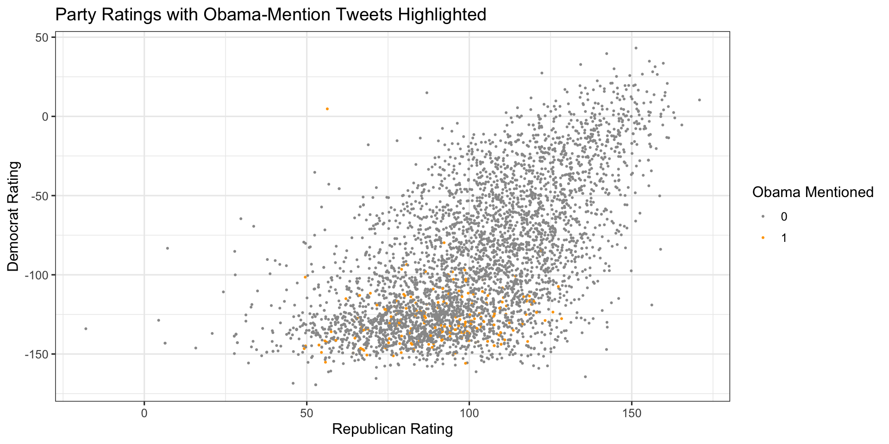
If desired, use gghighlight to emphasize only the Obama-mentioning tweets:
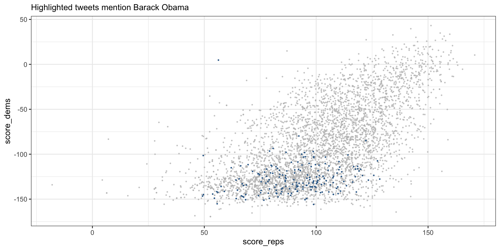
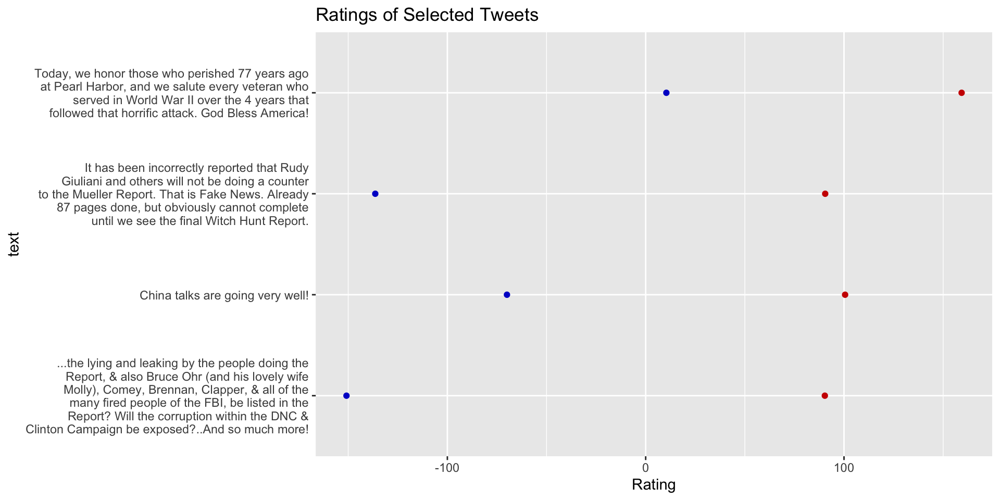
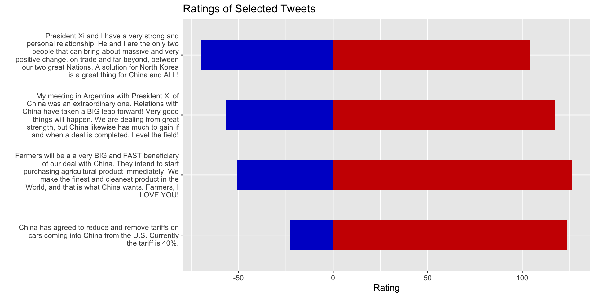
Let’s see if there are tweets mentioning Obama with POSITIVE Democrat ratings
[1] 1So, there was one such tweet! What did it say?
Students should now be able to:
Feel free to modify the code and experiment with different subsets or additional variable transformations. Good luck!